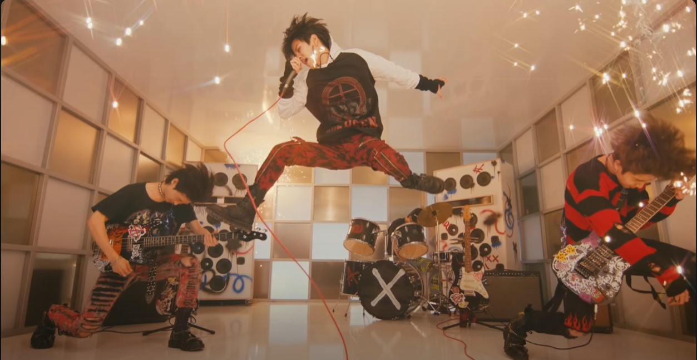

¿Qué puedes encontrar en esta web? Descubre al grupo de pop coreano Stray Kids
Aquí puedes encontrar información sobre el grupo de pop coreano Stray Kids y explorar su música, biografías de los miembros, historias detrás de las canciones y más.
